昨天站到上面的时候，不知道是不是注定的，就听到小熊那首歌。就突然想到好多事情。就回寝室后开始狂翻硬盘，找到了很多凌乱没整理好的东西。从进中心到现在。
进中心后的第一个活动相声话剧专场。做了ppt背景。
歌手50强海报的很草稿。小二看完第一句话：“那么多圈圈，你做春晚吗？”
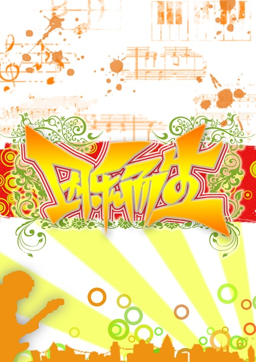
以及最后的终稿。说实话我觉做得不好看。
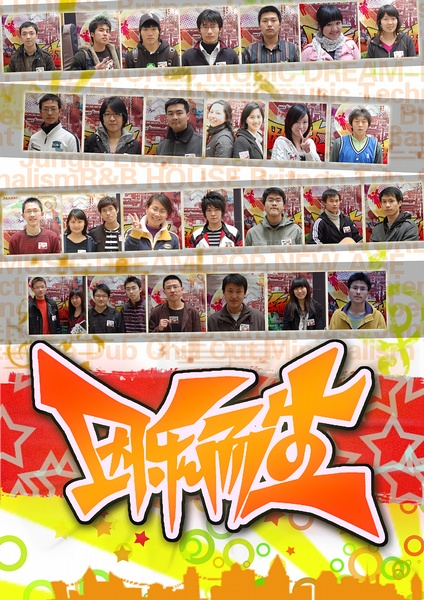
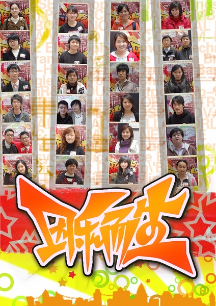
那个夭折的剧的和剧本一样只是半成品的海报。
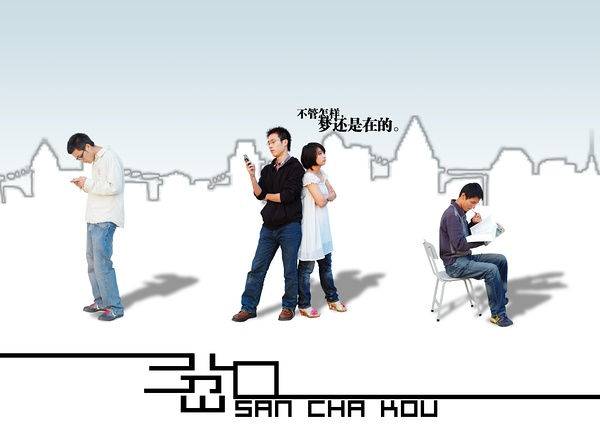
和logo。
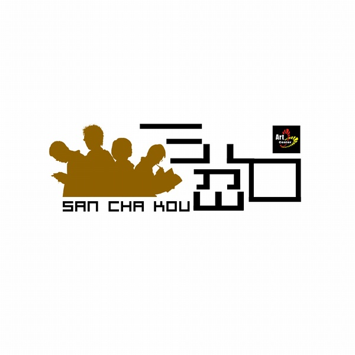
vos12当时随手乱做的后被秒速扼杀的海报。
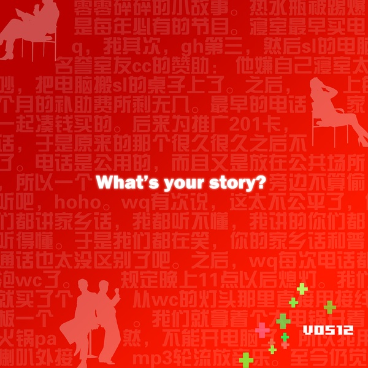
报名表。（要得很急，好像是某天很晚做然后第二天发掉的。）
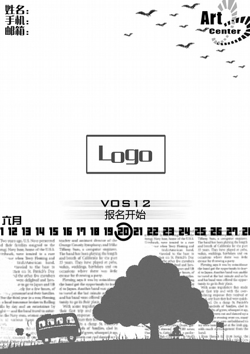
和最后的海报进站（dingding的创意。）
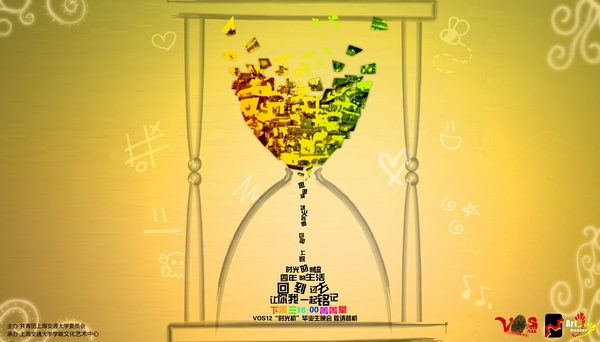
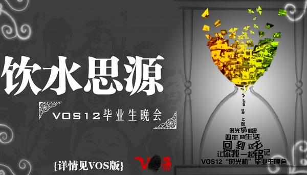
然后。。好吧我很不爽但是不后悔。
我记得做这张图的时候，大家一起在216群吃茄子牛肉饭。
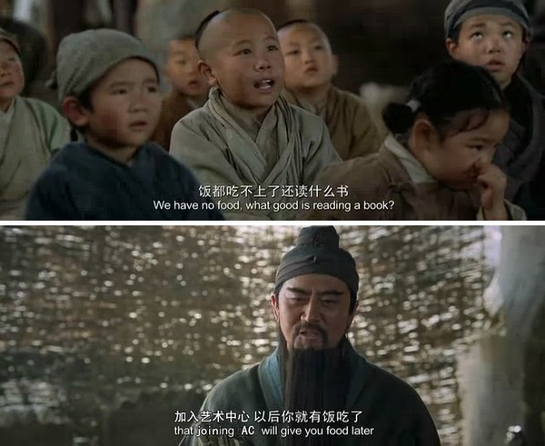
四说 ：你做个军训版logo吧。于是就有了一个很好看的小熊片尾。
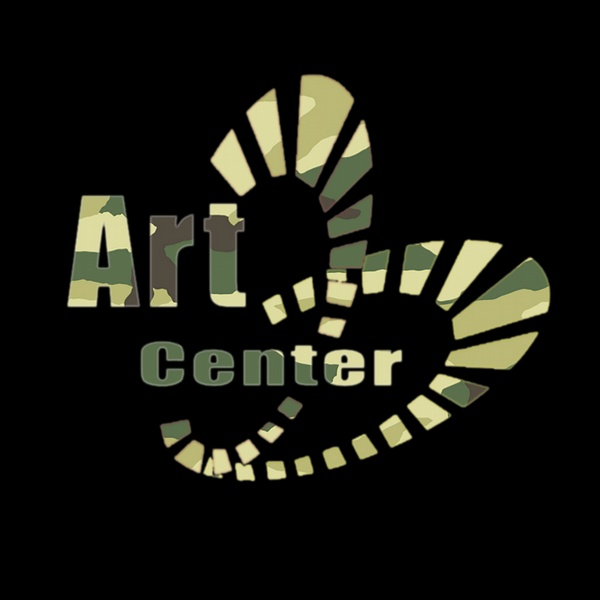
很可惜ps后的文件我找不到了。那段时间大家都通成马了。
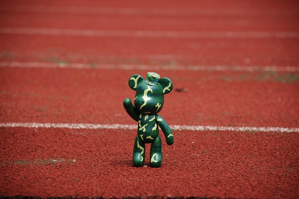
小二的主意真好。然后就看到少有的十多个人一起撕报纸做宣传海报的场面。
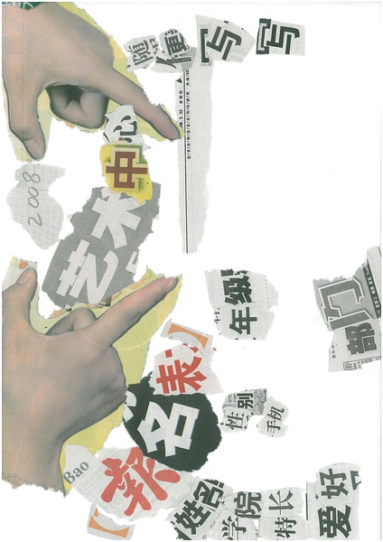
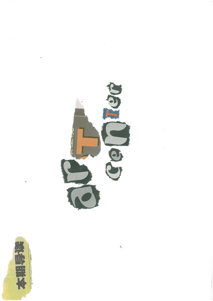
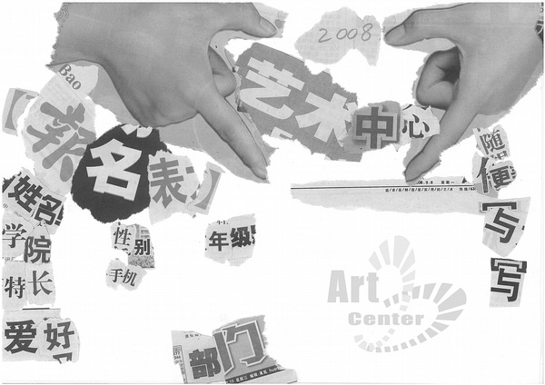
那张被人诟病的传单正背面。
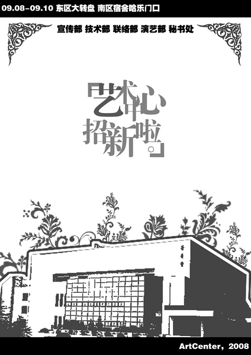
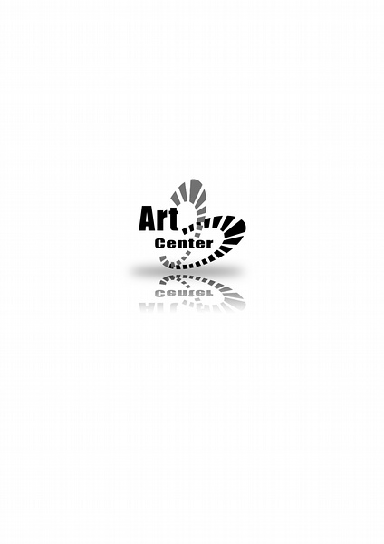
其实我最满意这张。后来贴在车篮子前面好久舍不得撕掉。
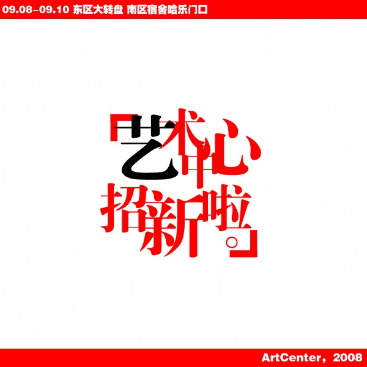
迎新报名表。
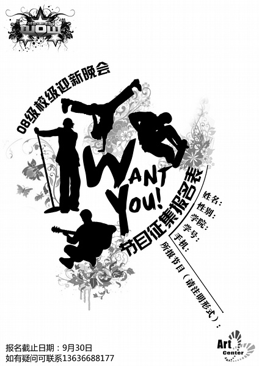
很多人没看到的一期喷绘初稿。
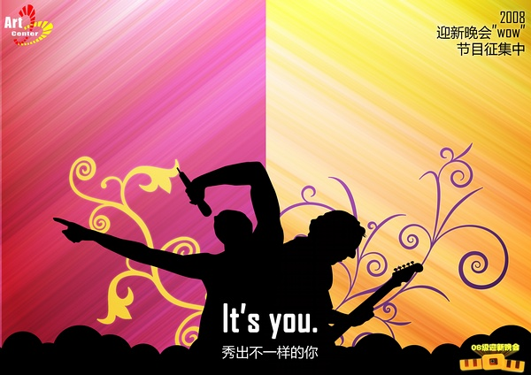
和很多人没有看到的系列海报初稿。
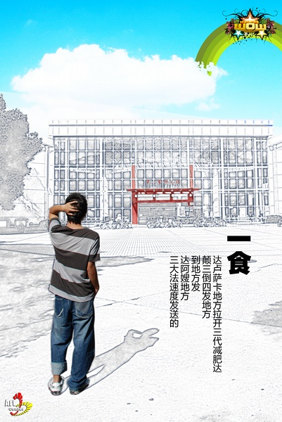
做这张的时候，小凡告诉我：做东西自己开心就好。然后我当时就想通了很多关于设计的东西。
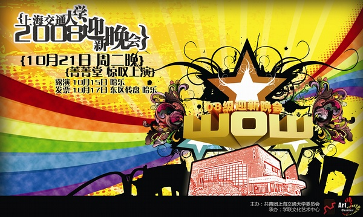
做完迎新后就开始自己的"半年不ps"。
其实我还是想说，最好的作品总是下一个。所以同学们，我要不要做下中心三国杀呢？
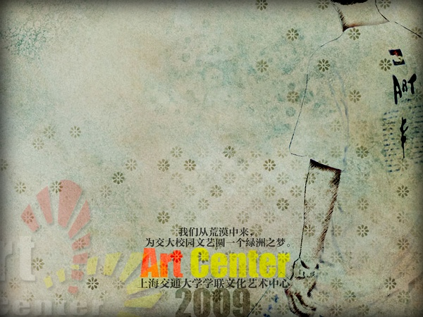